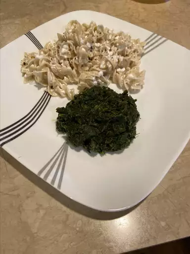

Noodles

Description
This simple recipe for pasta with cottage cheese came from the Polish side of my family. We call it "cottage cheese and noodles" or "lazy man pierogies." It's a great comfort food and can be made with any kind of noodle. You can serve it as a side dish, but we always enjoy it as a main course.
Ingredients
- ½ cup butter
- 1 small onion, diced
- 1 (16 ounce) package egg noodles
- 1 (16 ounce) container cottage cheese
- ½ cup sour cream
- ½ teaspoon sea salt
- ¼ teaspoon ground black pepper
Steps
- Melt butter in a saucepan over medium heat. Cook and stir onion in melted butter until softened, 7 to 10 minutes.
- Meanwhile, bring a large pot of lightly salted water to a boil. Add egg noodles and cook, stirring occasionally, until partially cooked, about 5 minutes. Drain and return to the pot.
- Pour onion mixture over noodles, then stir in cottage cheese, sour cream, salt, and pepper. Cook over medium heat, stirring occasionally, until sauce is heated through and noodles are tender, yet firm to the bite, 5 to 8 minutes.
Home